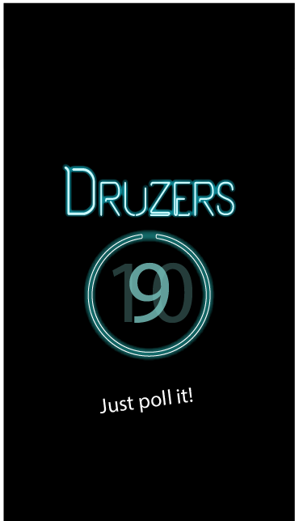

<ion-view view-title="Splash" style="background: url('./img/splashPageBackground.png') no-repeat center center fixed; 
    -webkit-background-size: 110%;
    -moz-background-size: 110%;
    -o-background-size: 110%;
    background-size: 110%;">
  <ion-content>
  	<!--  -->
  </ion-content>
</ion-view>